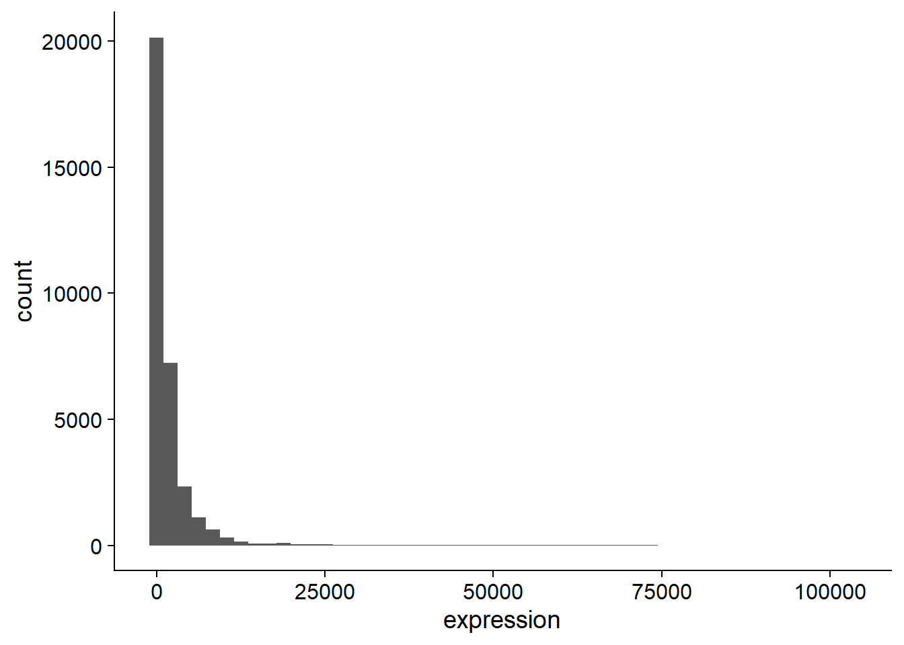
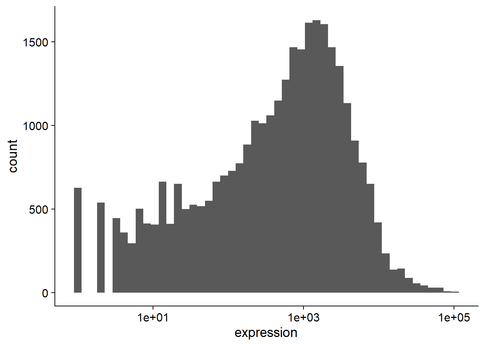
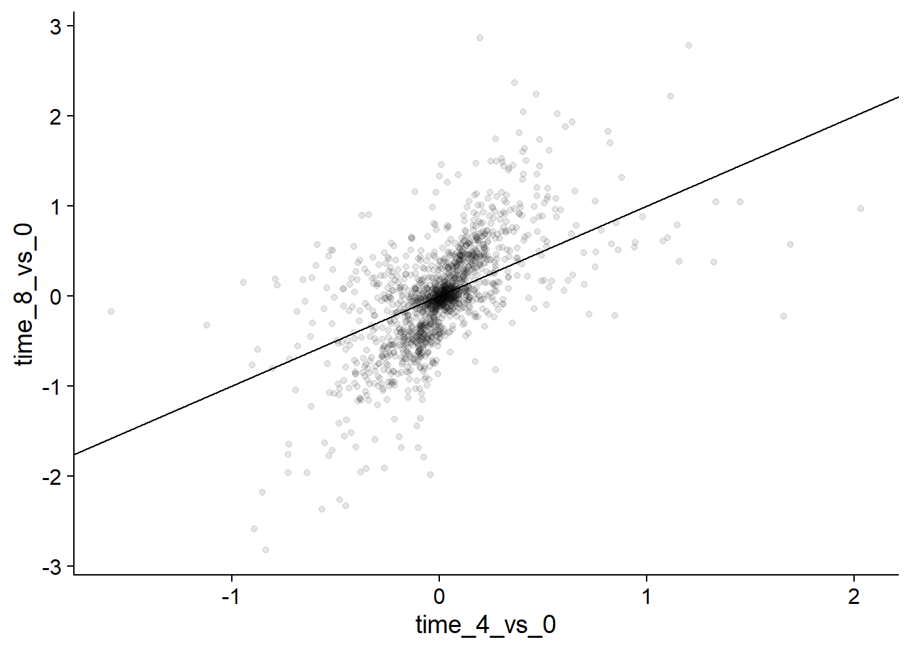
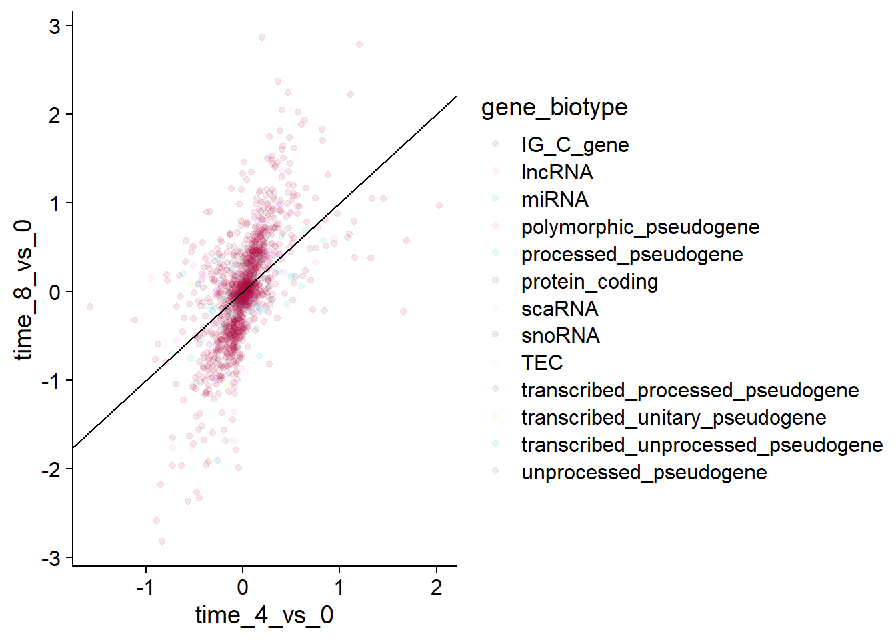
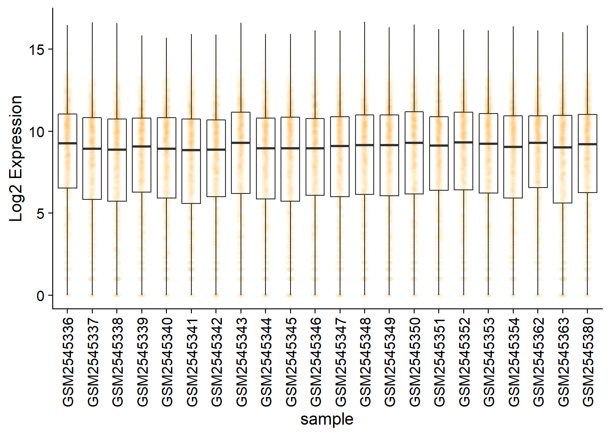
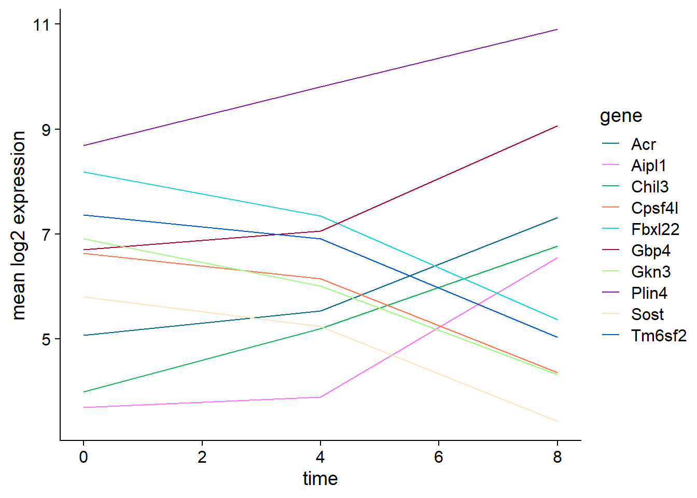
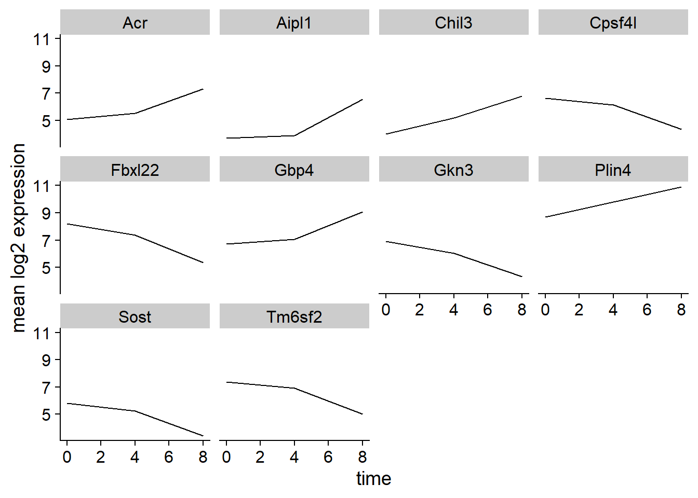
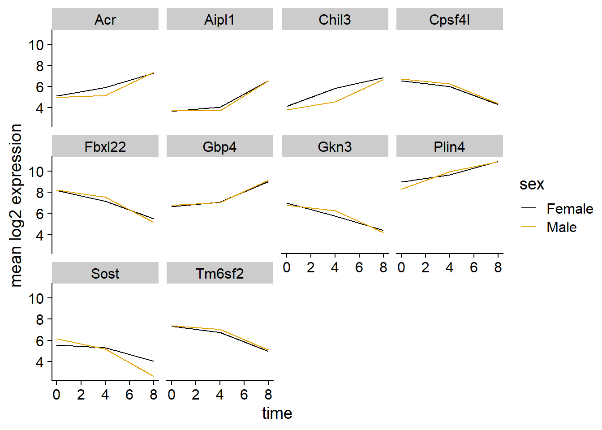

library (readr)library(ggplot2)library(cowplot)theme_set(theme_cowplot())library(dplyr)library(tidyr)library(hexbin)source('https://tinyurl.com/wjm6ryj')if(FALSE){download.file(url ="https://github.com/Bioconductor/bioconductor-teaching/raw/master/data/GSE96870/rnaseq.csv",destfile ="data/rnaseq.csv")}### Read in data here ###dat <-read_csv('data/rnaseq.csv')dat
Take a look at the distribution of the expression levels:
# hint: use geom_histogram## You'll probably notice an automatic message that appears when drawing the histogram: `stat_bin()` using `bins = 30`. Pick better value with `binwidth`.## Change the arguments bins or binwidth of geom_histogram() to change the number or width of the bins.(g1 <-ggplot(dat, aes(expression))+geom_histogram(bins =50))

The data should be transformed. Transforming on the \(\log_{10}\) scale is easy in ggplot2,
# transform x-axis to log_10 scaleg1 +scale_x_log10()

but we often use a \(log_2\) scale when looking at expression data:
# the following code will be helpfuldat <- dat %>%mutate (ln2expression =log2(expression +1))summary(dat$ln2expression)
Min. 1st Qu. Median Mean 3rd Qu. Max.
0.000 6.066 9.098 8.330 10.919 16.649
We will now draw a scatter plot with two continuous variables and the geom_point() function. This graph will represent the \(\log_2\) fold changes of expression comparing time 8 versus time 0, and time 4 versus time 0. To this end, we first need to compute the means of the log-transformed expression values by gene and time, then the log fold changes by subtracting the mean log expressions between time 8 and time 0 and between time 4 and time 0.
# fold change datadat_fc <- dat %>%# calculate summaries of log2 expression grouped by gene, time, gene_biotypegroup_by(gene, time, gene_biotype) %>%summarise(mean_exp =mean(ln2expression))%>%ungroup() %>%# pivot wider so that there is a separate column for each value in timepivot_wider(names_from = time, values_from = mean_exp)%>%mutate(time_8_vs_0 =`8`-`0`, # compare time 8 vs 0. use '`' to call the variabletime_4_vs_0 =`4`-`0`) # compare time 4 vs 0# visualize time_4_vs_0 by time_8_vs_0 ggplot(dat_fc, aes(time_4_vs_0, time_8_vs_0))+geom_point(alpha =0.1) +# hint: the following line will be helpfulgeom_abline(intercept =0, slope =1)

We could also add color, but it begins to get a little messy with the large number of categories we have.
# insert code hereggplot(dat_fc, aes(time_4_vs_0, time_8_vs_0, color = gene_biotype))+geom_point(alpha =0.1) +# hint: the following line will be helpfulgeom_abline(intercept =0, slope =1) +scale_color_manual(values=c(cbpalette, "#555555"))

Over-plotting can be an issue with large datasets like this. One solution is using hexbin:geom_hex().
Adding points to box plots can give us a better understanding of the underlying distributions.
# hints: use geom_jitter to plot points; this line of code will be helpfulggplot(dat, aes(sample, ln2expression))+geom_jitter(width =0.1, alpha =0.01, color = cbbPalette[2])+geom_boxplot(fill ='transparent') +labs(y ='Log2 Expression') +theme (axis.text.x =element_text(angle =90, hjust =0.5, vjust =0.5))

We could also use geom_violin to better see the distribution of points. Try coloring the points by time as well.
Let’s calculate the mean expression per duration of the infection for the 10 genes having the highest log fold changes comparing time 8 versus time 0. We can do this either by coloring each gene or using facet_wrap.
# First, we need to select the top 10 genestop_10_genes <-arrange(dat_fc, desc(abs(time_8_vs_0)))$gene[1:10]# Then create a subset of dat containing the 10 selected genestop_10_df <-filter(dat, gene %in% top_10_genes) %>%# Then group the data by gene and timegroup_by(gene, time)%>%# calculate the mean gene expression within each groupsummarise(mean_exp =mean(ln2expression))%>%ungroup()# plot summary linesggplot(top_10_df, aes(time, mean_exp, group = gene, color = gene))+geom_line()+scale_color_manual(values=cbpalette)+labs(y ='mean log2 expression')

# with facet_wrapggplot(top_10_df, aes(time, mean_exp))+geom_line()+scale_color_manual(values=cbpalette)+labs(y ='mean log2 expression')+facet_wrap(~gene)

Now we would like to split the line in each plot by the sex of the mice.
# Create a subset of dat containing the 10 selected genes# Then group the data by gene, time, and sex# calculate the mean gene expression within each grouptop_10_df2 <-filter(dat, gene %in% top_10_genes) %>%# Then group the data by gene and time and sexgroup_by(gene, time, sex)%>%# calculate the mean gene expression within each groupsummarise(mean_exp =mean(ln2expression))%>%ungroup()# with facet_wrapggplot(top_10_df2, aes(time, mean_exp, group = sex, color = sex))+geom_line()+labs(y ='mean log2 expression')+facet_wrap(~gene)+scale_color_manual(values=cbbPalette)

Let’s do something similar and create a plot that depicts how the average expression of each chromosome changes through the duration of infection.
The facet_wrap geometry extracts plots into an arbitrary number of dimensions to allow them to cleanly fit on one page. On the other hand, the facet_grid geometry allows you to explicitly specify how you want your plots to be arranged via formula notation (rows ~ columns; a . can be used as a placeholder that indicates only one row or column).
Let’s modify the previous plot to compare how the mean gene expression of males and females has changed through time:
# One column, facet by rowsggplot(top_10_df2, aes(time, mean_exp, group = gene, color = gene))+geom_line() +labs(y ='mean log2 expression')+scale_color_manual(values = cbpalette) +facet_grid(sex~.)